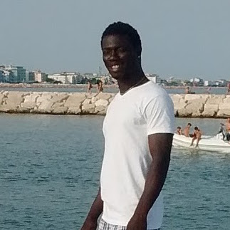

-

2008/2009
1987: I was born in Gambia until I decided to leave to see the world in 2008/2009
-

2011
March
I travelled to six countries in africa before reaching europe, Senegal, Mali, Burkina Faso, Niger, Chad and finally Libya.
-

2012
December
From Italy I moved to Berlin to try my luck here.
-

2014
July
I found some friends at ARILLO WHO SAW ME WAY TO BECOME A WEB DEVELOPER who are supporting me in my quest to become a web developer.
-
2015
in year 2015 Helping out at the project for civil society empowerment in Spain, Punta Ganile.